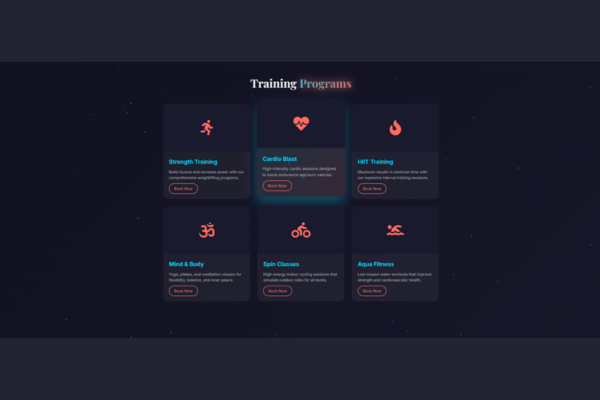

OnFiNtY Gym Landing Page
A dynamic and feature-rich landing page for a modern fitness center, packed with interactive elements like a custom cursor, animated particles, and a testimonial slider.
Project Overview
Energetic & Modern UI
A sleek, dark-themed design that uses vibrant cyan and coral accents to create a high-energy, motivational atmosphere for a gym brand.
Highly Interactive
Engages users with a custom cursor, animated particles, a number-counting stat section, and a satisfying ripple effect on all buttons.
Feature-Packed
Includes a custom-built testimonial slider, scroll-triggered animations, and dynamically generated background effects, all running on pure JavaScript.
Key Features

Screenshot Title: "Animated Particle Background"
The background is brought to life with dozens of animated particles that gently float and fade, creating a sense of depth and constant energy.
.png)
Screenshot Title: "Custom Glowing Mouse Cursor"
The standard mouse pointer is replaced with a custom-designed soft glow, providing a unique and futuristic user interaction as they navigate the site.
.png)
Screenshot Title: "Dynamic Number Counter"
As you scroll to the stats section, the numbers dynamically count up to their final values, making the gym's achievements feel more impactful.
.png)
Screenshot Title: "Auto-Playing Testimonial Slider"
Success stories are showcased in a custom-built, auto-playing slider with navigation dots, allowing users to easily browse through testimonials.
Technical Implementation
Dynamic Particle Generation (JS)
A JavaScript function dynamically generates background particles on page load, each with a random animation timing for a natural effect.
JavaScript-Powered Slider
The testimonial slider is built from scratch with vanilla JavaScript, handling state, navigation, and auto-play without any external libraries.
Dual-Purpose Intersection Observer
The Intersection Observer API efficiently triggers both fade-in animations for sections and the start of the number-counting animation.
Button Ripple Effect
JavaScript listens for clicks on buttons and dynamically creates a ripple `` with CSS animations, providing instant, tactile feedback.
CSS `clamp()` for Fluid Typography
Headlines use CSS `clamp()`, allowing their font size to scale smoothly with the screen width, ensuring readability on all devices.
Advanced CSS Hover Effects
Cards feature modern hover effects like sweeping light sheens and gradient overlays, created with CSS pseudo-elements and transitions.
Design & Development Details
Color Scheme: An energetic dark theme (#0E0E1B) with vibrant cyan (#00D8FF) and coral (#FF6F61) accents.
Layout: A robust multi-section layout built with responsive CSS Grid and Flexbox.
Animations: A comprehensive suite including dynamically generated particles, a custom cursor, a JS-powered slider, and number counters.
Skills Demonstrated: Advanced JS (DOM Generation, Sliders, Observers), Modern CSS (Grid, Animations), UI/UX Design.
Time taken to build: A project this rich with custom JS features would take approximately 35-45 hours.
Pricing: For a custom site with this many interactive features, my personal pricing would be in the $400 - $800 range.